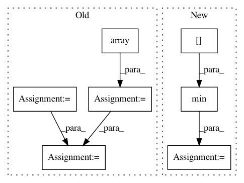

626173412d4281b693244e0705a787c4e7c08031,nilmtk/metrics.py,,fraction_energy_assigned_correctly,#,69
Before Change
re: float representing Fraction of Energy Correctly Assigned
"""
fraction = np.array([])
total_energy_predicted = np.sum(predicted_power.values)
for appliance in predicted_power:
appliance_energy_predicted = np.sum(predicted_power[appliance].values)
appliance_energy_ground_truth = np.sum(
df_appliances_ground_truth[appliance].values)
total_energy_ground_truth = np.sum(df_appliances_ground_truth.values)
fraction = np.append(
fraction, np.min(
[appliance_energy_predicted / total_energy_predicted,
appliance_energy_ground_truth /
total_energy_ground_truth
]))
return np.sum(fraction)
After Change
fractions = []
for meter_instance in predictions_submeters.instance():
fraction = min(fraction_per_meter_predictions[meter_instance],
fraction_per_meter_ground_truth[meter_instance])
fractions.append(fraction)
return sum(fractions)
In pattern: SUPERPATTERN
Frequency: 3
Non-data size: 7
Instances
Project Name: nilmtk/nilmtk
Commit Name: 626173412d4281b693244e0705a787c4e7c08031
Time: 2014-07-09
Author: jack-list@xlk.org.uk
File Name: nilmtk/metrics.py
Class Name:
Method Name: fraction_energy_assigned_correctly
Project Name: HazyResearch/fonduer
Commit Name: 0110937ab04f4298f98963bed1de08962d776b24
Time: 2020-07-01
Author: wajdikhattel@think-it.io
File Name: src/fonduer/utils/data_model_utils/structural.py
Class Name:
Method Name: lowest_common_ancestor_depth
Project Name: HazyResearch/fonduer
Commit Name: 0110937ab04f4298f98963bed1de08962d776b24
Time: 2020-07-01
Author: wajdikhattel@think-it.io
File Name: src/fonduer/utils/data_model_utils/structural.py
Class Name:
Method Name: common_ancestor